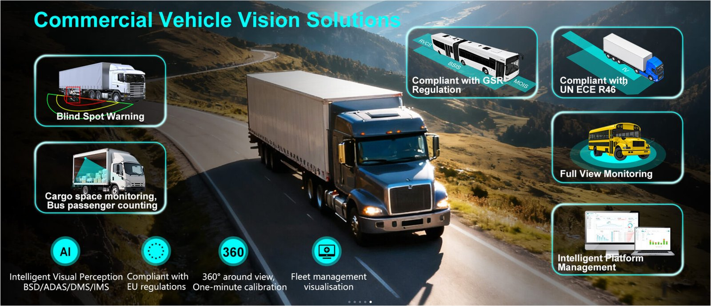
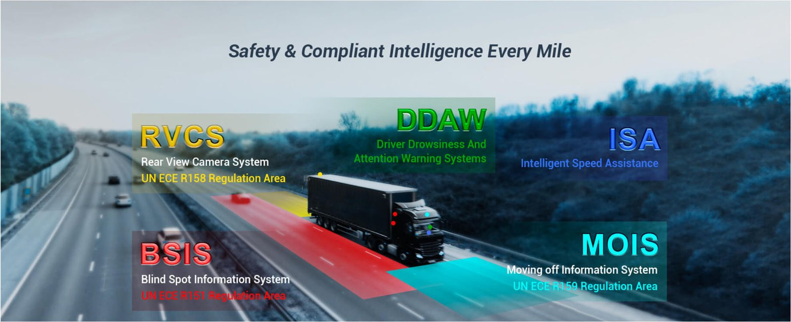
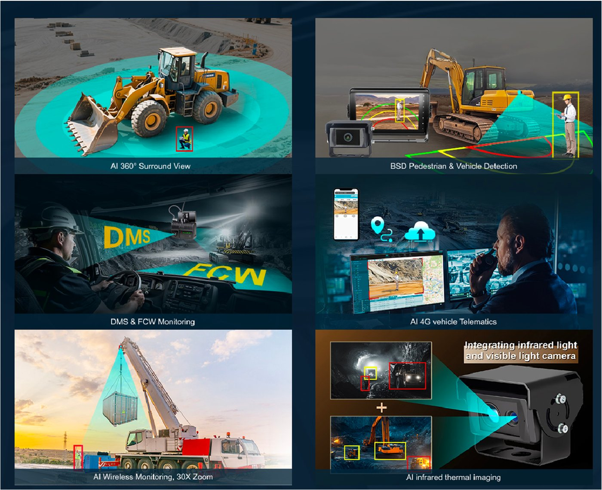
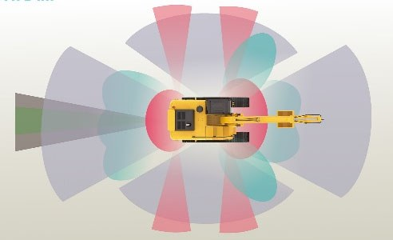
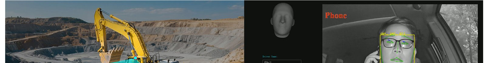
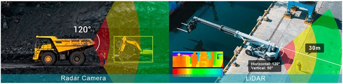
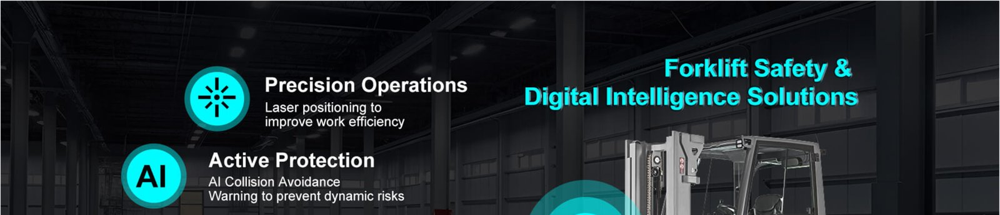

AI Perception Device · Visual & Non-visual AI Perception
Safety & Compliant Intelligence Every Mile
FleetKAM construye una arquitectura integral centrada en la percepción, la interacción y la conectividad de datos del vehículo: AI Perception Device, AI Human Machine Interface y AIoT, cubriendo toda la cadena de valor de la inteligencia embarcada.

Áreas de aplicación
Tres operaciones, una misma arquitectura de percepción
Las soluciones FleetKAM se aplican a camiones, transporte público y maquinaria de construcción, combinando cámaras, radares y unidades de control adaptadas a cada tipo de operación.

Camiones
IMS en cabina, BSD, AI 360° surround view, AI CMS, gestión remota 4G y analítica de espacio de carga.
Ver soluciones para camiones →
Transporte Público
Detección de peatones y ciclistas, monitoreo de conductor, vista 360° y conteo automático de pasajeros (APC).
Ver soluciones para transporte público →
Maquinaria de Construcción
Monitoreo de puntos ciegos, alertas de comportamiento del operador, conectividad 4G IoT y supervisión digital.
Ver soluciones para maquinaria →Tecnología central
Visual AI Perception & Non-visual AI Perception
Como capa más cercana al entorno real, el AI Perception Device evoluciona de un módulo de detección tradicional a una unidad integrada que combina percepción, cómputo y preprocesamiento. Su capacidad central radica en capturar información del entorno de forma precisa y confiable, impactando directamente en el rendimiento general del sistema.
Distintos sensores ofrecen fortalezas complementarias: las cámaras (Visual AI Perception) aportan información intuitiva y rica en datos, mientras que los sensores basados en radar (Non-visual AI Perception) entregan una detección estable de distancia y velocidad, especialmente en condiciones desafiantes. FleetKAM habilita configuraciones de sensores flexibles según el escenario, equilibrando rendimiento y costo.
Explorar tecnología completa
Portafolio de producto
Full-Scenario Perception

Intuitiva y rica en información
Cámaras con IA embebida para Blind Spot Detection, monitoreo de conductor, funciones ADAS, monitoreo de espacio de carga (Cargo Space Monitoring) y conteo de pasajeros en buses (Bus Passenger Counting).

Adaptabilidad en todas las condiciones climáticas
Radar Camera, LiDAR, cámaras térmicas, radares de onda milimétrica y detectores ultrasónicos para redundancia crítica cuando la visibilidad se degrada.
Del material corporativo FleetKAM
Precisión operativa en entornos industriales

¿Buscás la solución adecuada para tu operación?
Contanos qué tipo de flota o equipo operás y qué desafíos de seguridad o gestión enfrentás.
Enviar consulta